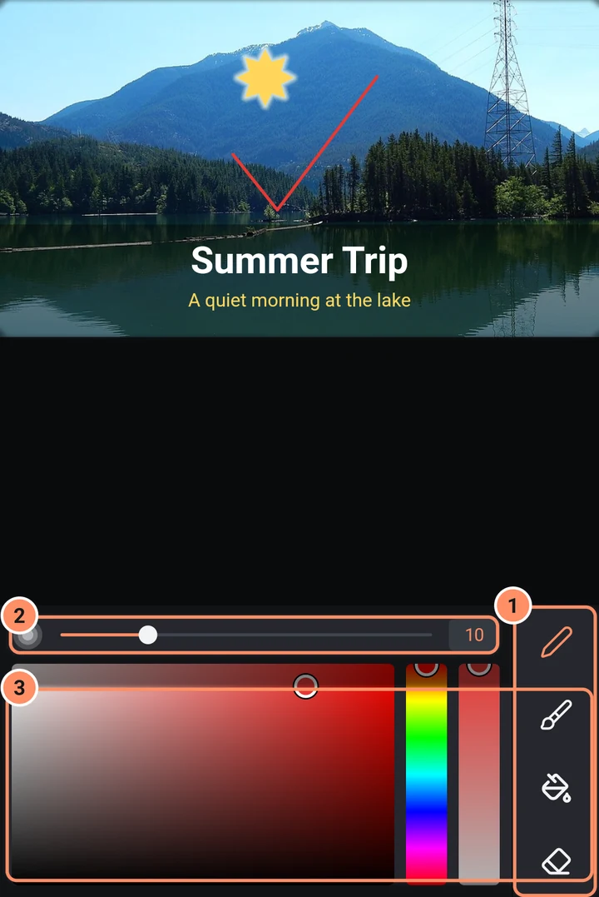
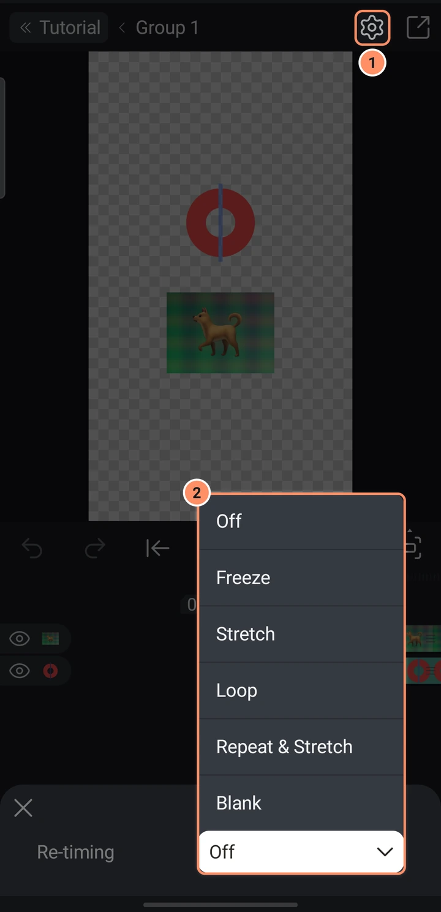

Mga Hugis, pagguhit at mask
Mga hugis, pen tool, freehand drawing, pag-import ng SVG, clipping mask, grupo, parent at animated na shape mask.
Sa pahinang ito
Mga Hugis
Magdagdag ng ready-made na hugis mula sa tab na Hugis ng menu na Add. Piliin ito at i-tap ang Mga opsyon sa hugis para baguhin. Maaaring i-animate ang bawat opsyon gamit ang mga keyframe.
- Nasa itaas ang Bilugan ang mga kanto at binibilog nito ang bawat kanto ng hugis. Ang Bilugang parihaba, Callout at Selyo ay gumagamit dito ng sarili nilang radius ng kanto.
- Itinatakda ng Laki ang lapad at taas.
- Kasunod ang mga opsyon ng hugis na iyon, halimbawa ang mga ngipin ng Gear, ang uka at dulo ng Puso, ang border, camera at mga button sa gilid ng Telepono, o ang border, header at grid ng Panel. Ang mga bilang tulad ng ngipin, sinag o dulo ay nagbabago nang buo-buong hakbang.
- Binubuksan ng Advanced ang mga mas bihirang opsyon, gaya ng saklaw ng Singsing o ng mga column at row ng Panel.
Ginagawa ng I-edit ang mga punto sa tool grid ang hugis na mga puntong maaari mong igalaw, kasama ang itsura nito sa sandaling iyon. Patuloy na gumagana ang Bilugan ang mga kanto, at ibinabalik ng Undo ang mga opsyon. Kung may naka-animate na opsyon, magtatanong muna ang app. Ganoon din ang ginagawa ng I-convert sa outline sa layer menu. Ang mga hugis mula sa pen tool o SVG ay may I-edit ang mga punto pa rin bilang pangunahing tool; may Bilugan ang mga kanto ang kanilang Mga opsyon sa hugis.
Ipinapakita ng mga lumang bersyon ng AbsentMotion ang mga hugis na ito ayon sa itsura nila sa simula ng layer, nang walang mga opsyon.
Ang kulay at outline ay itinatakda gamit ang Fill at Kulay at Frame at Anino. Tingnan ang Mga tool ng layer.
Ang pen tool at I-edit ang mga punto
Gumagawa ang Pen tool sa menu na Add ng bagong shape layer at binubuksan nito ang point editor. Binubuksan naman ito ng I-edit ang mga punto sa tool grid para sa isang umiiral na path shape. Sa preview, i-tap para maglagay ng punto; pindutin at i-drag para hilahin ang curve handle. May ghost point na nagpapakita kung saan mapupunta ang susunod na punto. Kapag umalis nang walang iginuhit, mabubura ang bagong layer.
Sa ibaba ng editor:
- Isara ang path o Buksan ang path (kailangan ng dalawa o higit pang punto).
- Gawing kurba ang punto o Gawing matalim ang punto.
- Magdagdag ng punto at Alisin ang punto.
- Isang trackpad na gumagalaw sa napiling punto ("I-drag para ilipat ang punto"), at kapag ina-edit mo ang handle ng isang makinis na punto, nila-lock ng mga toggle na Anggulo at Distansya ang anggulo o haba nito.
- Contour na may mga arrow na gumagalaw sa pagitan ng magkakahiwalay na sub-path ng isang hugis.
- Isang listahan ng mga punto sa kanan, na may maliliit na "+" na cell sa pagitan ng mga ito para magsingit ng punto.

Nasa itaas ang I-undo, I-redo at Bumalik.
Animated na hugis (shape keyframes)
Sa point editor, may time bar na may Nakaraang shape keyframe, Susunod na shape keyframe, Magdagdag ng shape keyframe at Alisin ang shape keyframe. Ang shape keyframe ay nag-iimbak ng buong hugis sa playhead. Lumipat sa ibang oras, baguhin ang mga punto, magdagdag ng isa pang keyframe, at mag-a-animate ang hugis sa pagitan ng mga ito. Ang nakaraang keyframe ay lumalabas bilang malabong dashed outline para makatulong sa pag-align. Ganito gumawa ng animated na mask para sa rotoscoping: i-trace ang outline sa paligid ng isang bagay sa bidyo at baguhin ito habang gumagalaw ang bidyo.
Freehand drawing
Gumagawa ang Freehand na brush sa menu na Add ng drawing layer at binubuksan nito ang drawing editor.
- Ang Pen ay gumuguhit ng pantay na linya, ang Brush ay nagbabago ng lapad ng linya gamit ang pressure, ang Fill ay ginagawang filled shape ang isang loop na iginuhit mo, at ang Eraser ay nag-aalis ng mga bahagi.
- Isang size slider (1 hanggang 300), at isang color picker na may hue strip at opacity strip.
- I-undo at I-redo sa itaas. Bawat stroke ay pinapanatili kapag inangat mo ang daliri.
- Ang tool, size at kulay ay natatandaan. Kapag umalis nang walang iginuhit, mabubura ang bagong layer.

Walang keyframe ang mga drawing. Para i-animate ang isang drawing, gumamit ng mga epekto tulad ng Pag-usad ng Guhit; tingnan ang library ng mga epekto.
Mga SVG file
Ginagawang mga hugis ng I-import ang SVG sa menu na Add ang isang vector na larawan. Tingnan ang Ang menu na Add para sa kung ano ang pinapanatili.
Mga mask at clipping
- Ang Gumawa ng clipping mask (layer menu) ay nag-clip ng isang layer sa hugis ng layer na direkta sa ibaba nito. Inaalis ito ng I-release ang clipping mask. Sa timeline, may maliit na nakakawit na arrow sa dulo ng row ng naka-clip na layer na nakaturo pababa sa layer kung saan ito naka-clip.
- Ginu-grupo ng Grupo at mask at Grupo at i-exclude (multi-select) ang mga layer at itinatakda ang blending mode ng pinakamataas na layer sa Mask o I-exclude. Maaari ring itakda ang blending mode na Mask o I-exclude sa anumang layer sa Opacity. Pinapanatili ng Mask ang nilalaman sa ibaba kung saan lang naroon ang layer; pinuputol naman ito ng I-exclude.
- Ang mga animated na mask ay nagmumula sa shape keyframes (sa itaas).
- Inilalarawan sa Mga AI tool ang Alisin ang background para sa mga larawan at bidyo.

Mga grupo at parent
- Inilalagay ng Grupo (multi-select) ang mga layer sa iisang group layer. Galawin, i-scale, i-fade at lagyan ng mga epekto ang grupo nang sabay-sabay. Tingnan ang Mga layer menu at multi-select.
- Ang parent (ang parent button sa top bar) ay gumagawa ng isang layer na sumusunod sa isa pa nang walang pag-grupo. Binabago ng mga epekto sa Galaw na Parenting Helper at Scale Assist kung paano sinusundan ng isang child ang parent nito: tingnan ang Paggamit ng mga epekto.
- Ang Null layer (Add, Object / Asset) ay hindi nakikita. Gawin itong parent ng ibang mga layer para galawin silang lahat nang sabay, o hayaan ang motion tracking na galawin ito.
I-edit ang isang grupo
Pumili ng grupo at i-tap ang I-edit ang grupo sa mga tool nito para buksan ito. Sa loob, ang timeline at ang preview ay ipinapakita lang ang mga layer ng grupong iyon, at binabago mo ang mga ito tulad ng anumang ibang layer. Maaari ka ring magbukas ng grupo sa loob ng isang grupo.
- Ipinapakita ng top bar kung nasaan ka: ang pangalan ng proyekto, pagkatapos ang pangalan ng bawat nakabukas na grupo. I-tap ang pangalan ng proyekto para bumalik sa buong proyekto, o ang pangalan ng isang grupo para bumalik sa grupong iyon.
- Kapag may napiling layer, may maliit na pill na may pangalan ng grupo sa tabi ng pangalan ng layer. I-tap ito para umalis sa grupo.
- Kapag walang napili, ang Back button ng phone ay umaalis sa grupong kinaroroonan mo.
- Binubuksan ng gear ang mga setting ng grupong kinaroroonan mo. Iisa ang setting nito, ang Re-timing: tingnan sa ibaba.
Ang grupong naka-link sa isang asset ay bumubukas na may Mga katangian ng asset sa halip: para baguhin ang mga layer nito, buksan ang orihinal na asset o gamitin muna ang I-unlink mula sa asset (tingnan ang Mga asset, template at preset). Hindi mabubuksan ang video cut-out na ginawa gamit ang Alisin ang background (bidyo).
Re-timing ng isang grupo
Ang Re-timing ang nagpapasya kung ano ang magpe-play kapag mas mahaba o mas maikli ang group clip kaysa sa mga layer sa loob nito. Buksan ang grupo (I-edit ang grupo), i-tap ang gear at pumili:
- Naka-off (ang default): nagpe-play ang mga layer sa sarili nilang bilis at humihinto kung saan sila nagtatapos.
- I-freeze: nananatili sa screen ang huling frame ng gitnang bahagi.
- I-stretch: bumabagal o bumibilis ang mga layer para mapuno ang group clip.
- I-loop: nagpe-play ulit ang mga layer mula sa simula.
- Ulitin at i-stretch: inuulit ang mga layer nang buong bilang ng beses, bahagyang nai-stretch para eksaktong mapuno ang clip.
- Blangko: walang lumalabas pagkatapos magtapos ang mga layer.
Sa loob ng grupo, may Itakda ang dulo ng intro at Itakda ang simula ng outro din ang copy at paste menu. Naglalagay ang mga ito ng gintong bandila sa ruler: ang bahagi bago ang dulo ng intro at pagkatapos ng simula ng outro ay nananatili sa totoong bilis nito, habang ang gitna ay nai-stretch, nilo-loop o fini-freeze.

Para ipakita ang isang napiling frame ng grupo sa halip, gamitin ang Frame sa mga tool nito: tingnan ang Mga tool ng layer.
I-ungroup
Ibinabalik ng I-ungroup sa layer menu ng isang grupo ang mga layer nito sa proyekto, sa kinaroroonan nila sa oras at sa screen. Kung may sariling mga epekto, bilis, opacity o blending ang grupo, nagbababala ang app na aalisin ang mga ito bago ito mag-ungroup. Ibinabalik ng Undo ang grupo.